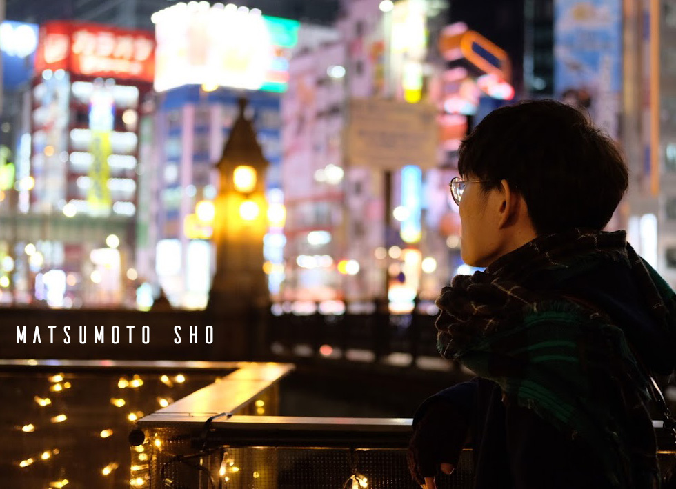

Coggie standとは
私、松本 翔（Coggie)が作品づくりをする際にコーヒースタンドのように
ひとつひとつ良質な作品を提供できるようにと考えたプラットフォームです。
主にイラストやデザインなどを中心に創作活動を行っております。
デザインとは情報を伝える為のツール。
目的を正しく見極め、必要な要素を盛り込み、
ビジュアルへと落とし込む過程が楽しみです。
日頃習慣的に行っている創作活動に発表の場を用意することで、
作品として昇華することができると考えています。
作品をより多くの人へ観てもらうためには、
作者自身が積極的にプロモーションする必要があり、
名刺自体も作品となるといえます。